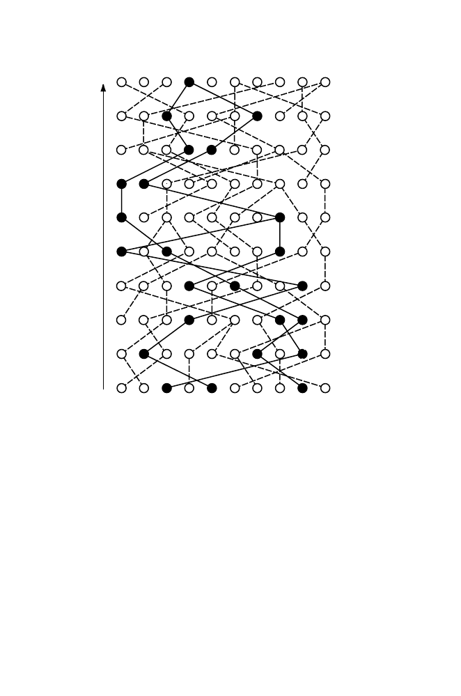

400
13 Genetic Variation in Populations
0
(Present)
1
2
3
4
5
6
7
8
9
Generations ago
T
MRCA
Fig. 13.8.
Model for coalescence. Ten successive populations are shown. Time,
measured in generations, is counted backward from the present (bottom population).
Each member of population
g
−
1 “chooses” its ancestor randomly from population
g
. Black circles in the bottom population represent the present members of three
lineages. Going back in time (increasing the number of generations
g
), the lineages
successively coalesce until they unite at a shared common ancestor (black circle,
top line). This type of analysis relates the time to most recent common ancestor,
T
MRCA
, to population size.
Thus, in a large population with time measured in units of 2
N
generations,
the time to the most recent common ancestor of a pair of genes has probability
density function
f
2
(
t
) given by
f
2
(
t
) = e
−
t
, t >
0
.
(13.27)
13.8.2 The Number of Differences Between Two DNA Sequences
We can use the previous results to obtain the expected number of differences
between any two DNA sequences sampled in the present generation. The